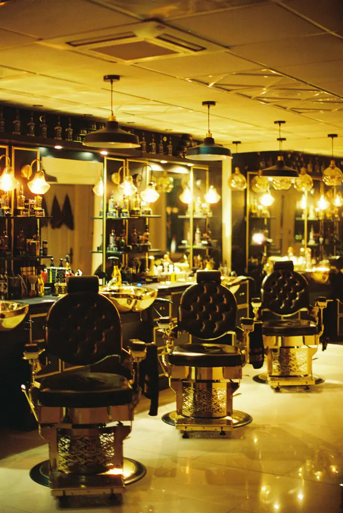
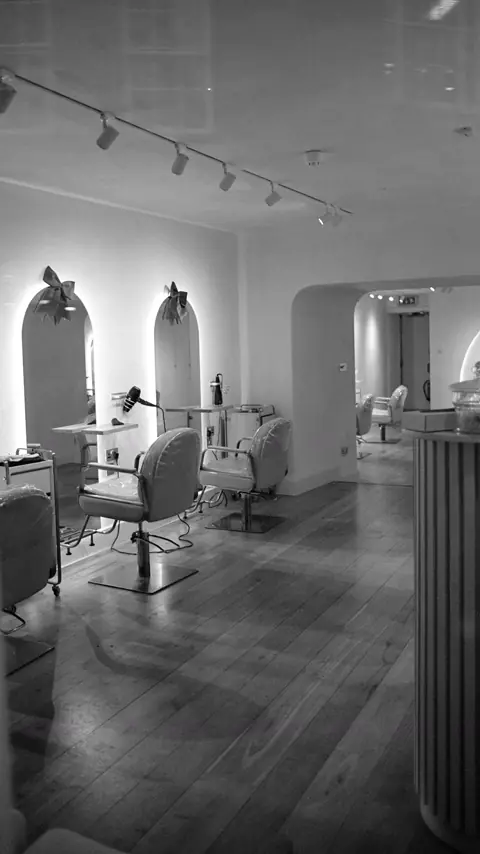
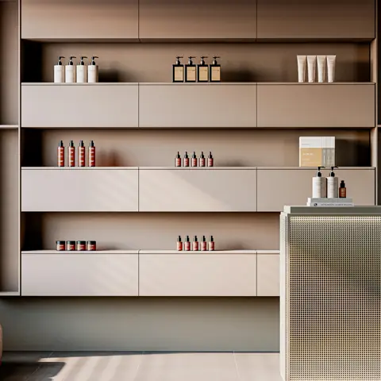
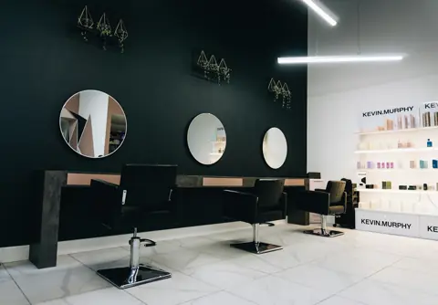

Barbearia Ofício · Canoas
Tesoura, navalha e tempo para fazer direito. Agende em um toque e chegue na sua hora.
Terça a sábado · a partir das 9h
A casa
Sem pressa, sem fila e sem corte de linha de montagem.
Serviços
Tesoura e máquina, lavagem e finalização. 45 min
Toalha quente, navalha e balm. 30 min
O ritual completo, com café ou chopp. 75 min
Pezinho e contorno entre um corte e outro. 15 min
Na pinça ou na navalha. 15 min
Dois cortes no mesmo horário. 60 min
O espaço



Clientes
Primeira barbearia em que eu não precisei explicar duas vezes.
Agendei pelo celular, cheguei e sentei. Sem espera nenhuma.
A toalha quente na barba já vale a visita.
Depoimentos ilustrativos: este é um negócio fictício.
Visite
Terça a sábado · a partir das 9h
Escolha o serviço e o horário pelo WhatsApp. Confirmamos na hora.
Agendar horário